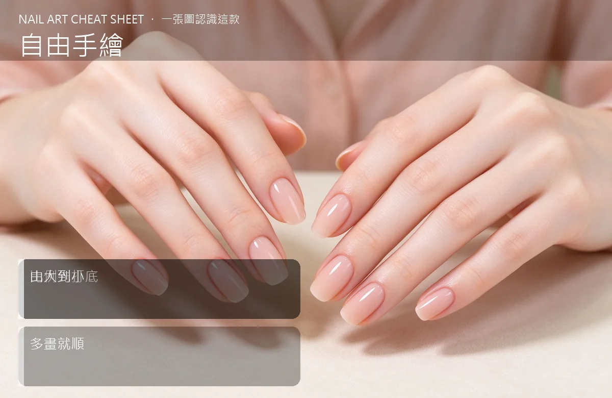

美甲自由手繪是什麼？進階入門攻略
自由手繪是把整副甲當一張小畫布，動物、人物、風景都能畫，最能展現美甲師個人風格。
自由手繪原理與辨識重點：美甲師不說的比例先打底
前面幾種技法都還算『有公式』——點點、畫線、排花瓣。自由手繪沒公式，你想畫什麼就畫什麼：小貓、小熊、太陽、城市天際線、一盤壽司……都可以縮進這 1.5 公分的甲面上。考驗的是比例、構圖和色彩感，不是某一種固定手勢。
誰適合做自由手繪？練就對了對號入座
已經把前面幾樣基本功練熟、想做『客人指定款』或 IG 作品的人；進階學生接競賽、接高價客製單也一定要過這關。
自由手繪美甲施作步驟：各號彩繪筆
先在紙上或甲片打小草稿 → 確認構圖比例 → 從大色塊開始鋪底 → 再拉細線、加細節 → 每個顏色照一次燈 → 局部補高光 → 最後封層。
自由手繪優缺點分析：美甲持久度與傷甲評估
| 優點 | 說明 |
|---|---|
| 完全客製化，客人要什麼就能畫什麼，是收高價的最大武器。 | 是通用流派的招牌，進階就能上手 |
| 缺點 | 說明 |
| 極度吃功夫，一幅小畫可能要一兩小時，對初學者挫折感很大。 | 前置與不要一上來就『細筆直接畫細節』，那一定歪。要先大色塊、再細線、最後高光，跟一般畫畫一樣的順序。沒顧好會打折 |

自由手繪新手雷區：由大到小與常見錯誤
注意：不要一上來就『細筆直接畫細節』，那一定歪。要先大色塊、再細線、最後高光，跟一般畫畫一樣的順序。
自由手繪和其他美甲做法的差別比較
自由手繪本身就是最終組合，常跟霧面封層搭——霧底上的小畫看起來像插畫，比亮面更有手繪感。
自由手繪美甲常見問題 FAQ
Q：不會畫畫能學嗎？ A：能。美甲的畫是『縮小版、簡化版』，不需要真的會素描。從最簡單的幾何動物開始（一個圓加兩個耳朵），慢慢加細節。
Q：自由手繪要準備多少筆？ A：建議至少三支：圓筆上色、平筆做大色塊、拉線筆畫細節。開始時別買太多，三支夠練三個月。